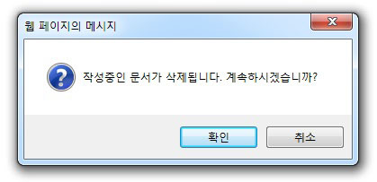

파일
새 문서
현재 작업중인 문서를 새로운 문서로 대체합니다.

01편집중 일 경우 수정된 페이지 저장 여부 선택 후 새 문서가 열립니다.
02편집된 내용이 없을 경우 새 문서가 열립니다.
파일 열기
선택한 파일의 내용을 가져 올 수 있습니다. (*지원 확장명: Html, htm, txt)

01편집 중 일 경우 작성된 문서는 삭제되고 선택한 파일 문서가 열립니다.
02편집된 내용이 없을 경우 선택한 파일 문서가 열립니다.
템플릿 열기
기존에 저장되어 있는 Template을 사용자가 사용할 수 있도록 도와줍니다.

01기존에 저장해 놓은 Template 목록을 보여줍니다.
02사용자가 선택한 파일을 Editor에 나타내줍니다.
레이아웃
문서 레이아웃을 사용하여 편리하게 문서작성을 할 수 있도록 도와줍니다.

저장
작업중인 내용을 사용자 컴퓨터에 특정파일로 저장합니다.

자동저장내용 불러오기
작업중인 내용을 사용자 컴퓨터에 특정파일로 저장합니다.

인쇄
사용자의 컴퓨터에 설정되어 있는 프린터로 Editor의 내용을 인쇄합니다.
페이지 분할
인쇄할 때 분할한 페이지대로 인쇄합니다.